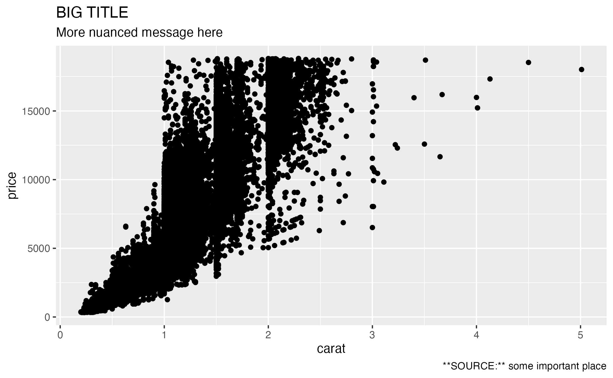
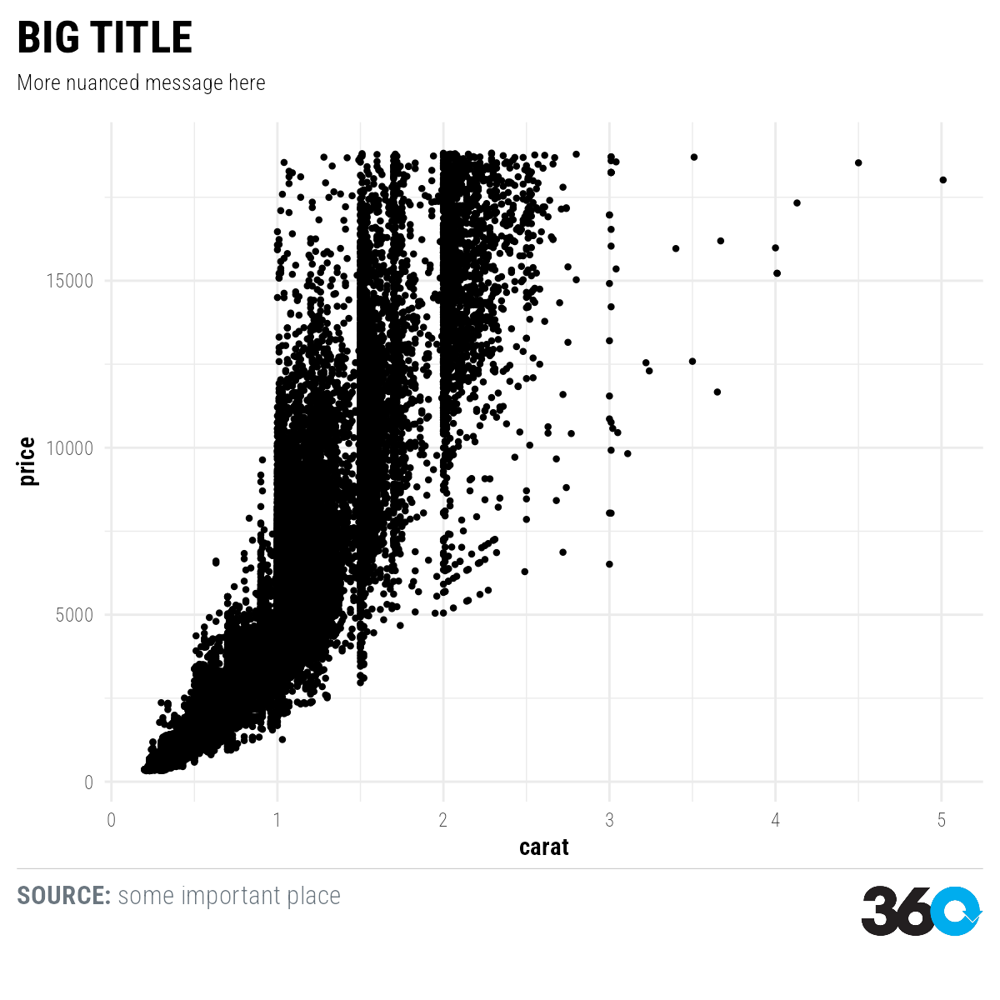
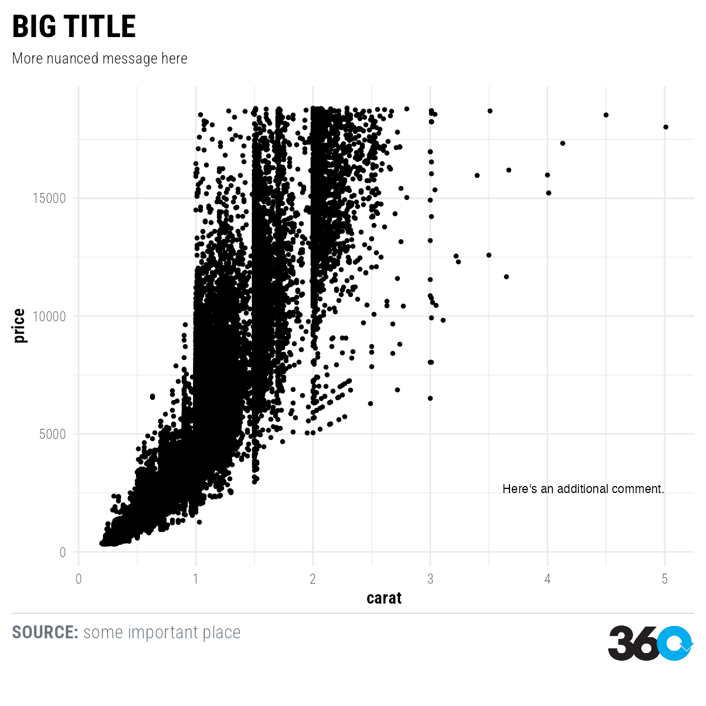
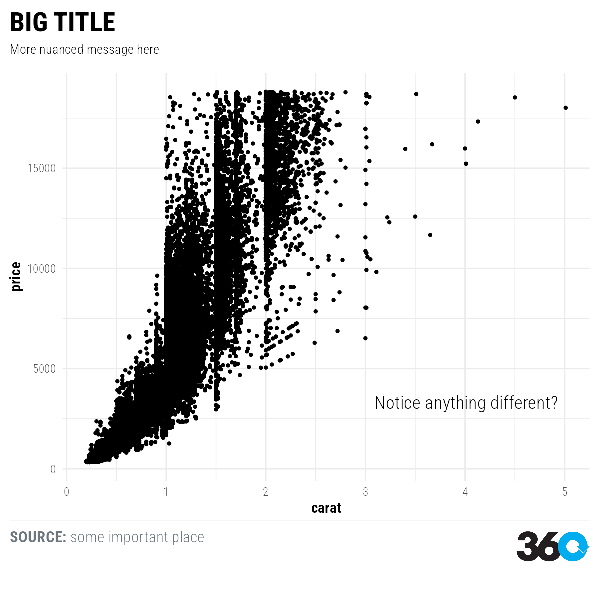

Working with fonts
James Goldie, 360info
working-with-fonts.RmdWe bundle Roboto
Condensed with the package. The themes360info package
takes care of using them when you make plots.
For example, here’s a very simple ggplot in the default style:
library(ggplot2)
library(themes360info)
p1 <-
ggplot(diamonds) +
aes(carat, price) +
geom_point() +
labs(
title = "BIG TITLE",
subtitle = "More nuanced message here",
caption = "**SOURCE:** some important place")
test_path <- knitr::fig_path(".png")
ggsave(test_path)
#> Saving 7.29 x 4.51 in image
knitr::include_graphics(test_path)
Simply adding theme_360 to this plot will convert a
regular ggplot into one that uses our fonts for the title, subtitle,
caption and axes:
p2 <- p1 + theme_360()
test_path <- knitr::fig_path(".png")
save_360plot(p2, test_path, shape = "square", retina = 2)
knitr::include_graphics(test_path)
(You might also notice that the caption now interprets the asterisks
as bold text. Some limited Markdown
or HTML formatting is available in the caption for this purpose! You
should also use <br> instead of \n to
break a long caption or subtitle across two or more lines.)
Styling annotations and labels
Although theme_360 gets us a long way to a 360-styled
plot, the fonts aren’t added automatically for all elements. For
example, see this plot, where we add an annotation:
p3 <-
p1 +
annotate("text",
label = "Here's an additional comment.",
x = 5, y = 2500,
hjust = "inward", vjust = "inward") +
theme_360()
test_path <- knitr::fig_path(".png")
save_360plot(p3, test_path, shape = "square", retina = 2)
knitr::include_graphics(test_path)
The other elements are styled correctly, but not the annotation.
Several elements require us to manually specify the font:
- One-off text annotations using
ggplot2::annotate_360or its variants - Labels for our data using
ggplot2::geom_textorggplot2::geom_label - Additional theme customisations beyond
theme_360, usingggplot2::theme
Using 360 fonts in other parts of the plot
Because we occasionally update our branding, the
themes360info package uses virtual fonts that work
regardless of which actual font we’ve bundled with the package. Use:
-
"Headline 360info": used for the plot title or very large (essentially title size) annotations - “Body 360info”: used for everything else. This has regular and bold
weights (the bold being equivalent to the subhead font) for when you
need to mix regular and bold content in an annotation.
- Since this is the default font, you can generally get away with just specifying the weight for most theme elements, rather than needing to remember the name.
Note that "Headline 360info" is typically used in
uppercase only, but the package doesn’t do that for you. Wrap your plot
title and subtitle in toupper to
transform them to uppercase (OR JUST TYPE THEM LOUDLY).
Let’s try it out:
p4 <-
p1 +
annotate_360_glasslight(
label = "Notice anything different?",
x = 5, y = 2500,
hjust = "inward", vjust = "inward") +
theme_360()
test_path <- knitr::fig_path(".png")
save_360plot(p4, test_path, shape = "square", retina = 2)
knitr::include_graphics(test_path)
Because these annotations are also powered by ggtext, we
can mix and match bold and regular text, as we can in the caption, or
even change colours part way through.